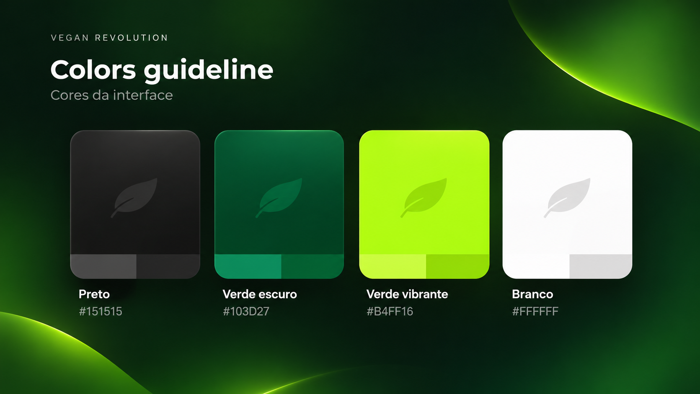
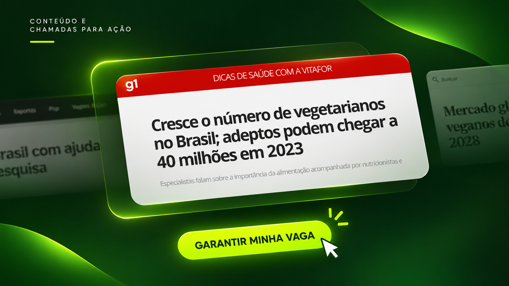
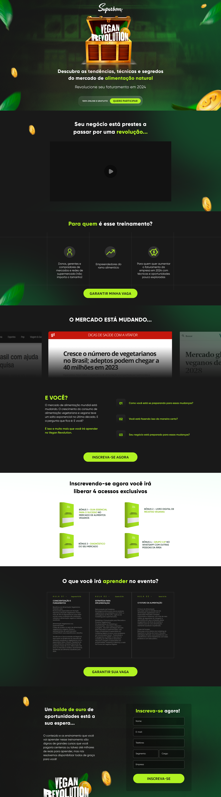

Landing page · Design de interfaces
Vegan Revolution.
Uma landing page criada para apresentar um treinamento sobre o mercado de alimentação natural, combinando uma identidade visual marcante com conteúdos e chamadas para ação.

01 / A proposta
Uma página feita para apresentar e convidar.
A proposta foi organizar as informações do evento em uma experiência visual envolvente, apresentando o treinamento, seu público, os conteúdos e os benefícios da inscrição.
02 / Identidade visual
Uma identidade de alto contraste.
A composição combina fundos escuros, tons de verde e elementos gráficos que reforçam a identidade do evento. O verde vibrante aparece nos destaques e nas chamadas para ação.

03 / Conteúdo e chamadas para ação
Informação que conduz à inscrição.
A página apresenta informações sobre o mercado, conteúdos do treinamento e benefícios da participação. As chamadas para ação aparecem em diferentes momentos para facilitar o acesso à inscrição.

04 / Página completa
Página completa
